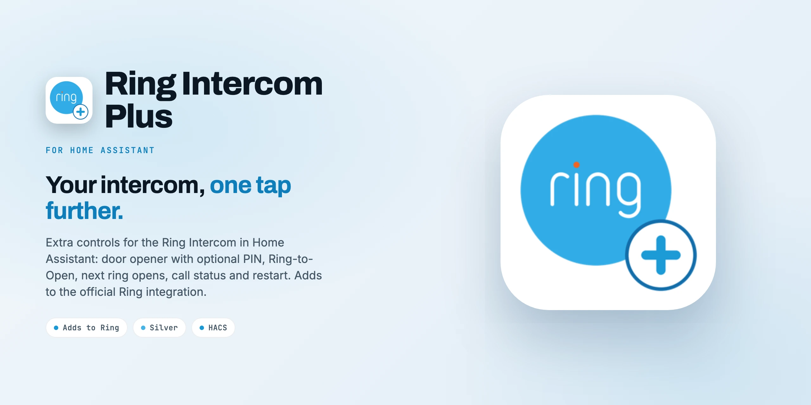

Ring Intercom in Home AssistantRing Intercom in Home Assistant
Ring Intercom Plus runs next to the official Ring integration and uses its login: door opener with optional PIN, ding, call active, Ring-to-Open, unlock duration and restart. Nothing to enter during setup.Ring Intercom Plus läuft neben der offiziellen Ring-Integration und nutzt deren Anmeldung: Türöffner mit optionaler PIN, Klingel, Anruf aktiv, Ring-to-Open, Öffnungsdauer und Neustart. Bei der Einrichtung gibt es nichts einzugeben.

What it doesWas sie kann
Tested on a Ring Intercom (Audio). All commands go through the Ring cloud, via the official Ring integration.Getestet an einer Ring Intercom (Audio). Alle Befehle laufen über die Ring-Cloud, über die offizielle Ring-Integration.
A lock that opens the door and shows "unlocked" for 5 seconds, also when the door is opened from the Ring app.Ein Schloss, das die Tür öffnet und 5 Sekunden „aufgeschlossen“ zeigt, auch beim Öffnen aus der Ring-App.
4 to 8 digits. The lock then opens only with the right code, in dashboards, automations and voice assistants alike.4 bis 8 Ziffern. Das Schloss öffnet dann nur mit dem richtigen Code, in Dashboards, Automationen und Sprachassistenten gleichermaßen.
Ding stays on for 20 seconds; call active follows the conversation for up to 3 minutes.Die Klingel bleibt 20 Sekunden an; Anruf aktiv folgt dem Gespräch bis zu 3 Minuten.
Ring-to-Open, unlock duration (1 to 10 s, analog systems) and a restart button.Ring-to-Open, Öffnungsdauer (1 bis 10 s, analoge Anlagen) und ein Neustart-Knopf.
No second login, no second push connection: rings and unlocks come from its event entities.Keine zweite Anmeldung, keine zweite Push-Verbindung: Klingeln und Entsperren kommen aus ihren Ereignis-Entitäten.
Experimental: the next ring within 60 seconds opens the door. From the guest access of the Ring app, not fully verified with owner accounts.Experimentell: das nächste Klingeln innerhalb von 60 Sekunden öffnet die Tür. Aus dem Gäste-Zugang der Ring-App, mit Besitzer-Konten nicht abschließend geprüft.
Before you startBevor du anfängst
Without a PIN, every lock.unlock opens it: voice assistants, dashboards, automations, scripts and anyone with access to your Home Assistant. Set a PIN in the options and do not expose the lock to voice assistants if you do not want that.Ohne PIN öffnet jeder Aufruf von lock.unlock: Sprachassistenten, Dashboards, Automationen, Skripte und alle mit Zugang zu deinem Home Assistant. Wer das nicht will, setzt in den Optionen eine PIN und gibt das Schloss nicht an Sprachassistenten frei.
The requests are the ones the Ring app sends. Ring does not document or support them and can change them at any time. All commands go through the Ring cloud; nothing here is local.Die Anfragen sind die der Ring-App. Ring dokumentiert und unterstützt sie nicht und kann sie jederzeit ändern. Alle Befehle laufen über die Ring-Cloud; lokal ist hier nichts.
InstallInstallation
As a custom repository.Als benutzerdefiniertes Repository.
https://github.com/SH1FT-W/ring-intercom-plusThe PIN for the door opener is set later with Configure.Die PIN für den Türöffner wird danach über Konfigurieren gesetzt.
No extra account, no YAML.Kein zusätzliches Konto, kein YAML.
The event entities of the Ring integration (ding, intercom unlock) must be enabled.Die Ereignis-Entitäten der Ring-Integration (Klingeln, Entsperren) müssen aktiviert sein.
Download the latest release, copy its custom_components/ring_plus folder into /config/custom_components/, restart Home Assistant and add the integration.Lade das neueste Release herunter, kopiere den Ordner custom_components/ring_plus nach /config/custom_components/, starte Home Assistant neu und füge die Integration hinzu.
Good to knowGut zu wissen
The Ring integration is not loaded yet. Ring Intercom Plus loads by itself as soon as it is.Die Ring-Integration ist noch nicht geladen. Ring Intercom Plus lädt von selbst nach, sobald sie es ist.
Only analog systems have it, as in the Ring app.Nur analoge Anlagen haben sie, wie in der Ring-App.
Ring did not return the user ID of the account (see the log). Everything else keeps working.Ring hat die Benutzer-ID des Kontos nicht geliefert (siehe Protokoll). Der Rest läuft weiter.
Rename the new entities to your old entity IDs; automations and dashboards then keep working.Benenne die neuen Entitäten auf die alten Entity-IDs um; Automationen und Dashboards laufen dann weiter.
Open a GitHub issue with debug log lines. Remove your email address, tokens and device IDs first.Ein GitHub-Issue mit Debug-Logzeilen öffnen. Vorher E-Mail-Adresse, Tokens und Geräte-IDs entfernen.
Ring Intercom Plus
One integration next to Ring, nothing to enter.Eine Integration neben Ring, nichts einzugeben.